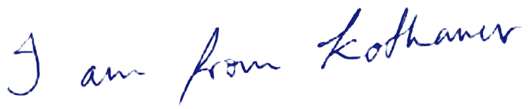

Kothanur Run Club
co-founder
A youth-led social fitness collective. The community runs are about connection, not competition.
read the journal below ↓
co-founder
A youth-led social fitness collective. The community runs are about connection, not competition.
read the journal below ↓founder
Workshops and exhibitions for local and emerging artists.
in print and online
Journey, growth, socials, events and pictures, newest first.